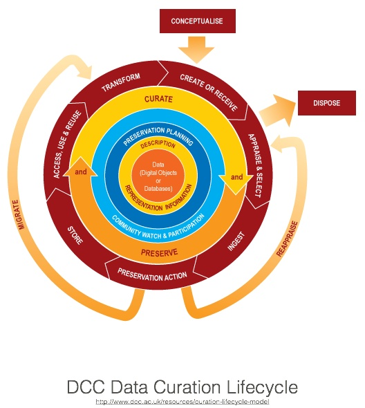
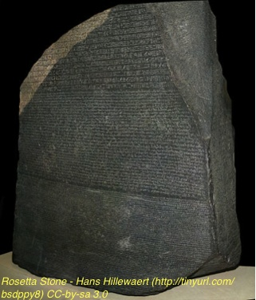

What you need to know …
Who?
What?
Where?
When?
Why?
How?
Access?

Data Management Plan requirements from funding agencies
Data sharing requirements from funding agencies and publishers
IRB Protocol requirements for explicitly defining how collected data will be handled, de-identified, shared and/or destroyed, expected risks
Increased collaborative research requiring efficient sharing of data within research teams
Data intensive research magnifies inefficiencies in data management

Data. For the purposes of this document, data are any and all complex data entities from observations, experiments, simulations, models, and higher order assemblies, along with the associated documentation needed to describe and interpret the data.
Metadata. Metadata are a subset of data, and are data about data. Metadata summarize data content, context, structure, interrelationships, and provenance (information on history and origins). They add relevance and purpose to data, and enable the identification of similar data in different data collections.
Embargo. A period during which access to research data is not allowed to certain types of users. This is either to protect the revenue of the publisher or (more generally) to protect the interests of other parties (for example, partner research organizations).
A licence in this context is a legal instrument for a rights holder to permit a second party to do things that would otherwise infringe on the rights held.The first thing to note is that only the rights holder (or someone with a right or licence to act on their behalf) can grant a licence; it is therefore imperative that the intellectual property rights (IPR) pertaining to the data are established before any licensing takes place.
Who?
What?
Where?
When?
Why?
How?
Access?
Who? Credit (researchers, sponsors), Questions, Responsibility, Role
What? What was measured, Units, Aggregation
Where? Geographic Location (define datum, Coordinate System, Method)
When? Date, Time - structured, Consistent, Time Zone, Standards-based
Why? Purpose for Data collection, Suggested Use, Known Limitations
How? Instruments, Sensors, Algorithms, Models, Software, Methods
Access? Licensing Terms, Embargo, Redistribution, Modification, Privacy Concerns
Define folder and file names and structure - and use it
Use meaningful names that include basic information (e.g. date, measurement, collection, etc.)
Unique
Avoid Spaces
ASCII Characters only
Security of Files & Backups
Backups
Consistent content
Separate data from analysis
Focus on tabular structure for tabular data
Explicitly encode missing data, and document that encoding
Use meaningful column headings - while keeping short without spaces
Include units
Data dictionary

Plan for data & metadata integration into an archive
Open Standards
>>>
Proprietary ASCII
>
Proprietary Binary - Documented
>
Proprietary Binary
Many documentation standards
Machine and human readable
Commonly based on Extensible Markup Language (XML)
Wide variety of strategies/methods/tools for creating documentation
Enables Discovery, Use, and Understanding
Work with experts in documentation for your discipline to identify relevant standards for your data

Identify what data need to be shared & preserved
Documentation
Who is responsible for providing continuity of access?
Get help … Consult early and often (rds@unm.edu) - your target archive
Maintain documentation from the project planning stage and throughout your work
Adopt a systematic model for organizing your data: naming, file structure, formats, storage, backups
Adopt consistent and documented data structures
Separate data from analysis products
Always have the entire data lifecycle in mind when you are managing your data
PLOSONE Data Sharing Requirements: http://www.plosone.org/static/policies#sharing
Library of Congress: Sustainability of Digital Formats: http://www.digitalpreservation.gov/formats/index.shtml
Digital Curation Centre: Disciplinary Metadata: http://www.dcc.ac.uk/resources/metadata-standards
Creative Commons Licensing Information: https://creativecommons.org/
Karl Benedict - kbene@unm.edu / Research Data Services - rds@unm.edu
Unless otherwise noted, all images are from shutterstock.com
The products, platforms and development work upon which this work is based have been funded by
Dilbert cartoon used with permission: http://universaluclick.com/licensing_permissions/educational_use